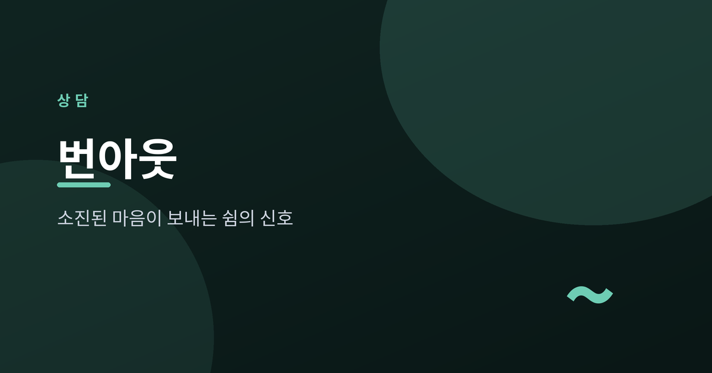
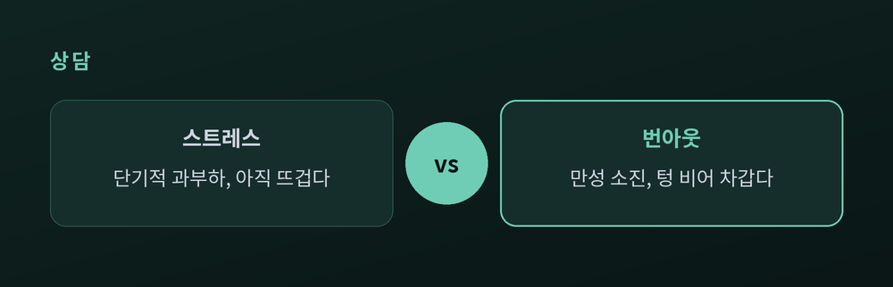
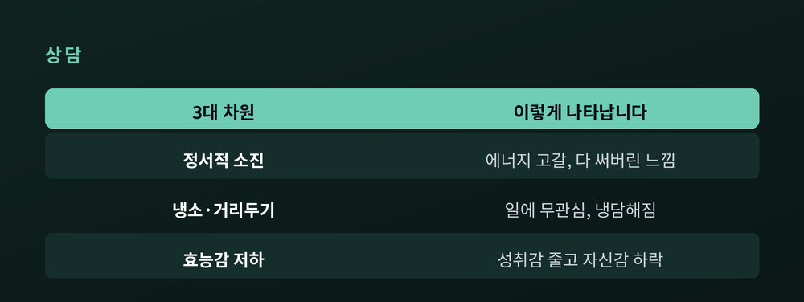
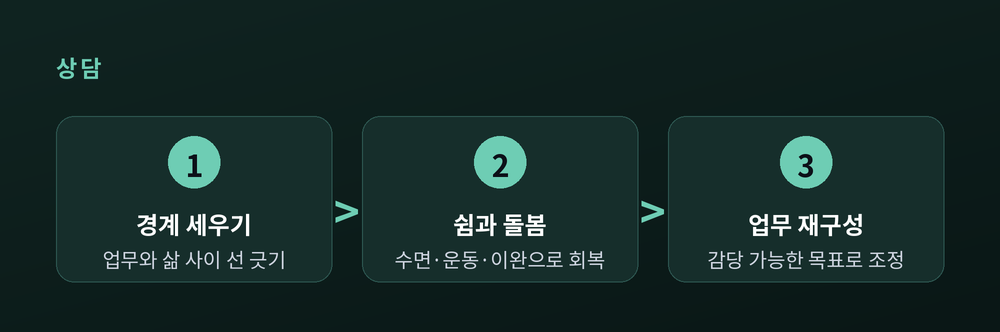
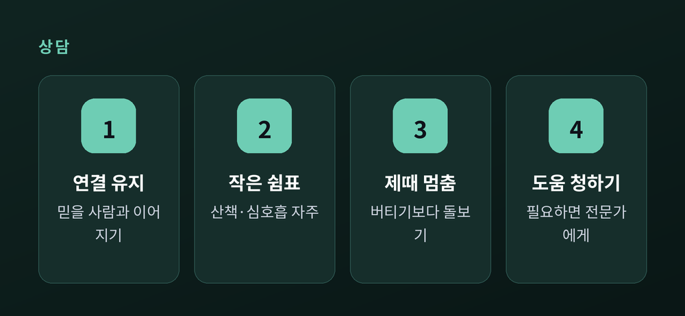

쉼이 필요하다는 신호

오늘은 번아웃에 대해 이야기해 보려 합니다. 아침에 눈을 떠도 몸이 천근만근이고, 그렇게 좋아하던 일마저 어느 순간 시들해질 때가 있습니다. 분명 어제도 쉬었는데 피로가 가시지 않고, 사람을 만나는 일조차 버겁게 느껴지기도 합니다. 이 글에서는 번아웃이 정확히 무엇인지, 흔히 말하는 스트레스와는 어떻게 다른지, 그리고 소진된 마음을 어떻게 돌볼 수 있는지를 차분히 정리해 보겠습니다.
먼저 짧게 요약부터 드립니다. 번아웃은 오래 관리되지 못한 직무 스트레스가 켜켜이 쌓인 결과이며, 정서적 소진과 냉소, 효능감 저하라는 세 얼굴로 찾아옵니다. 쉼과 경계 설정, 그리고 사람과의 연결이 회복의 출발점입니다. 무엇보다 이것은 당신이 약해서 생긴 일이 아닙니다.
이 글이 특히 도움이 될 분들이 있습니다. 요즘 들어 부쩍 지치고, 일이든 사람이든 예전만큼 마음이 가지 않는다고 느끼시는 분입니다. 혹은 곁의 누군가가 힘들어 보여 어떻게 이해하면 좋을지 고민하시는 분입니다. 스스로를 다그치는 대신, 잠시 멈춰 자신의 상태를 살펴보고 싶으신 모든 분께 이 글을 건넵니다.
번아웃은 게으름이나 의지 부족이 아닙니다.
세계보건기구(WHO)는 2019년 국제질병분류 제11판에 번아웃을 등재하면서, 이를 질병이 아니라 '직업적 현상'으로 규정했습니다. 정의는 이렇습니다. 성공적으로 관리되지 못한 만성적 직장 스트레스로부터 비롯된 증후군입니다. 다시 말해 잠깐의 피로가 아니라, 오래 손쓰지 못한 스트레스가 마음의 바닥까지 내려간 상태입니다.
여기서 꼭 짚고 싶은 지점이 있습니다. 번아웃은 성격의 결함이 아니라, 일과 사람 사이에서 오래 쌓인 스트레스의 결과라는 점입니다. 그러니 "내가 약해서 이렇다"고 스스로를 몰아세우실 필요는 없습니다. 오히려 반대입니다. 그동안 몸과 마음이 그만큼 오래, 성실히 애써 왔다는 신호로 읽는 편이 훨씬 정확합니다.
흔한 신호는 이렇게 조용히 찾아옵니다. 늘 지쳐 있고, 사소한 일에도 예민해지며, 무엇에도 좀처럼 관심이 가지 않습니다. 집중이 흐트러지고 의욕이 바닥을 칩니다. 원인 모를 두통이나 소화 문제가 생기고, 자고 일어나도 개운하지 않은 밤이 이어지기도 합니다. 이런 신호가 몇 가지 겹쳐 오래 이어진다면, 마음이 보내는 경고음일 수 있습니다.
이런 신호들은 대개 한꺼번에 크게 터지기보다, 아주 천천히 스며듭니다. 그래서 정작 본인은 알아차리기 어려울 때가 많습니다. "원래 이맘때면 다 이렇지"라며 넘기다가, 어느 날 문득 아무것도 하고 싶지 않은 자신을 발견하기도 합니다. 그러니 작은 변화가 오래 이어진다면, 대수롭지 않게 흘리지 말고 한 번쯤 멈춰 서 보시길 바랍니다.
물론 이 글은 특정한 누군가를 진단하려는 것이 아닙니다. 다만 자신의 상태를 가만히 들여다보는 계기가 되었으면 합니다.
번아웃을 그저 심한 스트레스쯤으로 여기기 쉽습니다. 그러나 둘은 결이 다릅니다.

스트레스는 대체로 단기적이고, 특정한 압박에 연결되어 있습니다. 힘들긴 해도 여전히 일에 몰입해 있는, 말하자면 '과열' 상태입니다. 마감이 끝나고 며칠 쉬고 나면 대체로 다시 굴러갑니다.
번아웃은 다릅니다. 만성 스트레스가 오래 쌓인 끝에 서서히 찾아옵니다. 몰입 대신 거리두기가 생기고, 열정이 있던 자리에 무관심이 들어섭니다. "감당하기 벅차다"를 넘어 "다 써버렸다, 텅 비었다"는 느낌에 가깝습니다.
정리하면, 스트레스는 '너무 많이'의 문제이고 번아웃은 '텅 비어버림'의 문제입니다. 스트레스가 과부하로 뜨겁다면, 번아웃은 다 타버려 오히려 차갑습니다. 그래서 번아웃은 하루 이틀 쉬는 것만으로 잘 낫지 않습니다. 소진에 이르게 한 원인 자체를 함께 들여다봐야 비로소 회복이 시작됩니다. 이 차이를 알아두는 것만으로도, 지금 내게 필요한 처방이 '더 참기'가 아니라 '돌봄'이라는 사실이 분명해집니다.
그동안 많은 분이 스스로에게 이렇게 말해 왔을 것입니다. "조금만 더 버티면 괜찮아지겠지." 하지만 이미 소진의 단계에 접어들었다면, 더 버티는 일은 오히려 회복을 늦출 수 있습니다. 뜨거운 스트레스에는 잠깐의 휴식이 약이 되지만, 차갑게 식어 버린 번아웃에는 근본을 돌아보는 시간이 필요합니다. 두 상태를 구분하는 눈이, 자신을 지키는 첫 단추인 셈입니다.
번아웃 연구의 선구자인 심리학자 크리스티나 매슬랙과 WHO는 번아웃을 세 가지 차원으로 설명합니다. 서로 다른 두 곳의 설명이 정확히 포개진다는 점이 눈여겨볼 만합니다.

첫째는 정서적 소진입니다. 에너지가 고갈되어, 몸과 마음을 남김없이 다 써버린 듯한 상태입니다. 아침부터 이미 지쳐 있다면 이 신호일 수 있습니다.
둘째는 냉소, 곧 거리두기입니다. 자기 일에 심리적 거리감이 커지고, 부정적이거나 냉담한 태도가 늘어납니다. 예전엔 마음을 다하던 일에 어느새 시큰둥해지는 것이지요.
셋째는 효능감 저하입니다. "내가 잘 해내지 못한다"는 느낌이 들고, 성취감과 유능감이 조금씩 줄어듭니다. 같은 일을 해도 예전만큼 뿌듯하지 않다면 이 대목을 떠올려 보시면 좋겠습니다.
세 가지가 한꺼번에 몰려올 수도, 그중 하나가 유독 두드러질 수도 있습니다. 어느 쪽이든 마음이 보내는 경고로 받아들이시길 바랍니다. 참고로 과중한 업무량과 장시간 노동, 무너진 일과 삶의 균형, 남에게 계속 내어주는 돌봄·의료 같은 직종, 그리고 업무에 대한 통제권이 거의 없다는 느낌이 번아웃의 위험을 키웁니다. 내 잘못이라기보다, 놓인 환경이 그만큼 버거웠다는 뜻이기도 합니다.
이 세 얼굴을 알아두면 좋은 이유가 있습니다. 막연히 "요즘 힘들다"에 머무르지 않고, 내가 지금 어느 대목에서 특히 지쳐 있는지 조금 더 또렷이 바라볼 수 있기 때문입니다. 지쳐 있는지, 냉담해졌는지, 자신감이 무너졌는지. 그 자리를 알면 어디부터 돌봐야 할지도 자연스레 보이기 시작합니다. 다만 이것은 스스로를 채점하려는 잣대가 아니라, 자신을 이해하기 위한 다정한 거울에 가깝습니다.
소진된 마음은 하루아침에 다시 채워지지 않습니다. 다만 방향을 제대로 잡으면 조금씩, 그러나 분명히 나아집니다.

먼저 경계를 세웁니다. 일과 사생활 사이에 선을 긋는 일입니다. 정해진 시간 이후에는 업무 알림을 끄고, 점심시간을 온전히 쉬며, 이미 벅찰 때는 추가로 밀려오는 일에 "지금은 어렵습니다"라고 말해 봅니다. 퇴근 후 얼마간이라도 스마트폰과 거리를 두면, 늘 켜져 있던 뇌가 비로소 진짜 휴식 모드로 넘어갑니다.
다음은 쉼과 자기 돌봄입니다. 일에서 잠시 분리되어 회복할 시간을 확보합니다. 규칙적인 운동, 충분한 수면, 명상과 이완이 지친 몸의 에너지를 천천히 되돌립니다. 다만 앞서 말씀드린 대로, 쉼만으로는 충분하지 않습니다. 원인을 그대로 둔 채 쉬기만 하면 얼마 못 가 다시 같은 자리로 돌아오기 쉽습니다.
그래서 세 번째로 업무 자체를 다시 짭니다. 막연히 많던 일을, 명확하고 감당 가능한 목표로 나누고 조정합니다. 잃어버린 통제권을 조금이라도 되찾는 방향입니다. 혼자 끌어안지 마시고, 상사나 동료와 솔직하게 우려를 나누며 함께 조정할 방법을 찾아보시길 권합니다. 말을 꺼내는 것만으로 어깨의 짐이 한결 가벼워지기도 합니다.
회복에는 시간이 걸립니다. 그리고 그 속도는 사람마다 다릅니다. 어제보다 오늘 조금 덜 지쳤다면, 그것으로 충분한 한 걸음입니다. 큰 결심을 한 번에 밀어붙이기보다, 작은 변화를 오래 이어가는 편이 소진된 마음에는 훨씬 다정합니다. 자신을 몰아세우던 습관을 잠시 내려놓고, 스스로에게도 너그러워지시길 바랍니다.
무너진 뒤 힘겹게 채우기보다, 미리 지키는 편이 언제나 낫습니다. 일상에서 붙들 만한 작은 습관들을 모아 보았습니다.

무엇보다 사람과의 연결을 놓지 마시길 바랍니다. 신뢰할 수 있는 사람과 이어져 있다고 느낄수록 스트레스에서 더 빨리 회복됩니다. 실제로 강한 사회적 지지를 받는 사람은 같은 상황에서도 번아웃에 덜 빠진다고 합니다. 나를 이해하고 아껴 주는 사람과 보내는 시간은, 그 자체로 든든한 안전망이 되어 줍니다. 힘든 마음을 굳이 완벽한 문장으로 설명하지 않아도 괜찮습니다. 그저 곁에 있어 주는 사람이 있다는 감각만으로도, 무너지지 않을 힘이 생기곤 합니다.
그리고 하루 안에 작은 쉼표를 여러 개 두시길 권합니다. 짧은 산책, 잠깐의 심호흡, 화면에서 눈을 떼는 몇 분. 거창하지 않아도 괜찮습니다. 이런 틈이 쌓여 하루의 긴장을 풀어 줍니다. 몸을 규칙적으로 움직이고, 잠을 충분히 확보하는 일도 마찬가지입니다. 특별한 처방이 아니라 당연해 보이는 것들이지만, 소진을 막아 주는 힘은 대개 이런 기본에서 나옵니다.
한 가지 덧붙이자면, 완벽하게 지키지 못했다고 자책하지 않으셨으면 합니다. 오늘 알림 하나를 끄고, 산책 한 번을 다녀왔다면 그것으로 이미 자신을 돌본 것입니다. 예방이란 거창한 결심이 아니라, 이런 작은 선택을 조금 더 자주 내리는 일에 가깝습니다.
예전에는 버티는 것이 미덕이라 여겼습니다. 지금은 제때 멈추는 것이 더 큰 용기라고 생각합니다. 잘 쉬는 사람이 결국 오래 걷습니다.
끝으로 한 마디만 더 드리겠습니다.
번아웃은 당신이 부족해서가 아니라, 그만큼 오래 애써 왔다는 흔적입니다.
몸과 마음이 보내는 신호를 애써 못 본 척하지 마시고, 조금 느려지더라도 자신을 돌보는 쪽을 택하시길 바랍니다. 만약 증상이 심하거나 오래 지속된다면, 혼자 견디려 하지 마시고 전문 상담사·정신건강의학과 등 전문가의 도움을 받으시길 권합니다. 도움을 청하는 일은 약함이 아니라, 자신을 아끼는 가장 건강한 선택입니다.
누구에게나 잠시 멈춰 숨을 고를 시간이 필요합니다. 그것은 뒤처지는 일이 아니라, 더 멀리 가기 위한 준비입니다. 쉼이 필요하다는 마음의 신호, 오늘은 그 조용한 목소리에 조금 더 귀 기울여 보시면 어떨까요.
"잘 쉬는 것도 삶의 기술입니다. 소진되기 전에, 먼저 자신에게 쉼을 허락하세요."